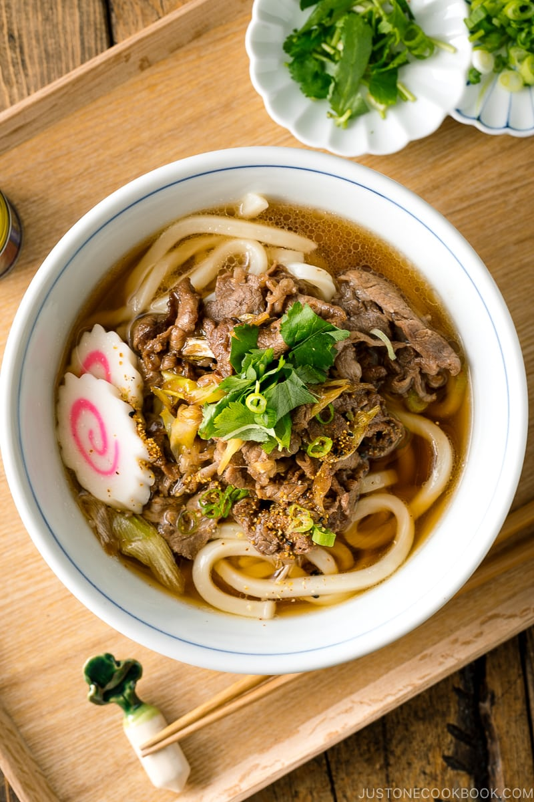

Beef Udon

Description
Craving a steamy bowl of hot noodle soup? This recipe serves up tender sliced beef on top of thick, chewy udon noodles in a savory broth.
Ingredients
- Udon noodles
- Thinly sliced beef
- Negi (Japanese long onion)
- Dashi (Japanese soup stock)
- Condiments
- Soy sauce
- Sake
- Mirin
- Sugar
- Optional toppings
- Narutomaki (Fish cake)
- Green onion
- Mitsuba (Japanese herb)
Steps
- Prepare dashi broth and add the seasonings to make udon soup broth.
- Stir fry the negi and thinly sliced beef. Season them with soy sauce and sugar.
- Cook udon noodles according to the package instructions and drain well.
- Assemble udon noodles and broth in individual bowls. Top the cooked beef and other toppings of your choice.
Back to Homepage